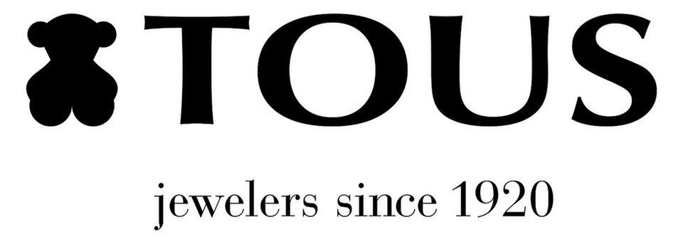

홈 > 브랜드 매거진 > Coccinelle
Coccinelle
코치넬레(Coccinelle)는 1978년 이탈리아 파르마 인근에서 설립된 가죽 핸드백·액세서리 브랜드이다.
산업 분야 패션·럭셔리 · 공개 등급 자료 기반 · 브랜드 평가 4.1 ★

한눈에 보는 브랜드
코치넬레는 1978년 이탈리아 파르마 인근 살라 바간차에서 마치에리 가문의 자코모 마치에리가 설립한 여성 핸드백·가죽 액세서리 브랜드다. 상호는 이탈리아어로 무당벌레를 뜻하며 행운의 상징을 담는다.
1995년 밀라노 비아 스타투토에 첫 단독 매장을 열며 도약했고, 2012년 한국 이랜드그룹에 인수되며 글로벌 자본·아시아 확장의 전환점을 맞았다. 본사는 지금도 파르마 살라 바간차에 있으며, 2024년 매출 약 1억 4백만 유로(약 1천5백억원 안팎)를 기록하며 처음으로 1억 유로 선을 넘어선 접근가능 럭셔리(accessible luxury) 진영의 대표 주자다.
브랜드 관점
코치넬레의 핵심은 정통 럭셔리 메종의 가격 장벽 없이 메이드 인 이탈리아 가죽의 질감과 장인성을 제시하는 접근가능 럭셔리 포지셔닝이다. 가격대가 대략 이백~육백 달러 구간에 형성되어, 진짜 이탈리아 가죽 제품에 처음 투자하려는 소비자를 끌어들이는 입문 럭셔리로 기능한다.
무당벌레라는 상징은 행운·여린 외형 속 단단한 보호 갑각이라는 이중 이미지로 부드럽고 일상적인 감성을 코드화해, 구조적·정제된 인상의 푸를라와 직접 경쟁하면서도 차별화 축을 만든다. 전략적으로는 자사 직영 매장·프랜차이즈·이커머스·트래블 리테일을 축으로 한 리테일 확장과 중국·아시아 집중이 두드러진다.
가방 매출 비중이 약 70%로 높은 가운데 신발·젠더리스 액세서리·주얼리·펫 라인으로 카테고리를 넓히는 다각화도 진행 중이다. 한국 독자 입장에서는 이랜드그룹 소유라는 점이 의미가 크다.
이탈리아 헤리티지 브랜드를 한국 자본이 인수해 글로벌 무대에서 키운 사례로, 한국 패션 자본의 해외 럭셔리 운용 역량을 보여주는 참고 지점이 된다.
시작과 성장
코치넬레가 태어난 1978년은 이탈리아 가죽 산업이 토스카나·베네토를 축으로 세계 럭셔리 가죽 시장의 중심으로 굳어가던 시기였다. 자코모 마치에리는 파르마 인근 살라 바간차에서 회사를 세워, 파르마 지역 패션 공급망 기업들과 긴밀히 결합한 메이드 인 이탈리아 생산 구조를 기반으로 삼았다.
첫 번째 전환점은 1995년이다. 밀라노 비아 스타투토에 첫 단독 브랜드 매장을 열었고 같은 해 종업원이 이미 80명 규모에 이르며 본격 브랜드 사업으로 도약했다.
창업자 아들 안젤로 마치에리가 약 15년에 걸쳐 브랜드를 확장하며 이 성장을 이끌었다. 두 번째 전환점은 2012년 한국 이랜드그룹이 마리엘라 부라니 패션그룹 측으로부터 코치넬레를 인수한 사건이다.
인수 시점 브랜드는 약 28개국 매장망과 한국 주요 백화점 입점을 갖춘 상태였고, 이랜드는 안젤로 마치에리에게 CEO 유임을 요청하며 신흥시장 확장 발판으로 삼았다. 이후 2006년 파리를 시작으로 런던·도쿄·뉴욕 등으로 이어진 해외 매장 확장과 카테고리 다변화가 누적되며 오늘의 글로벌 네트워크로 성장했다.
브랜드 아이덴티티
코치넬레의 가치는 일상에서 쓰는 여성을 위한, 트렌드를 반영한 세련된 디자인과 최상급 이탈리아 가죽·장인 생산의 결합에 있다. 비주얼 아이덴티티의 중심은 무당벌레다.
이탈리아어 브랜드명 자체가 무당벌레를 뜻하며, 행운과 매력의 상징인 동시에 여려 보이지만 갑각으로 스스로를 지키는 존재이자 친환경의 표상으로 해석된다. 워드마크는 전 대문자 산세리프로 단정하고 절제된 인상을 준다.
타깃은 정통 메종의 가격은 부담스럽지만 진짜 이탈리아 가죽의 품질을 원하는 폭넓은 여성 고객층이며, 브랜드 보이스는 화려한 과시보다 부드럽고 캐주얼하며 실용적인 우아함을 지향한다. 이 톤이 푸를라의 구조적·정제된 결과 대비된다.
제품과 서비스
핵심 취급 품목은 여성 가죽 핸드백으로 전체 매출의 약 70%를 차지하며, 소가죽 액세서리(약 22%)가 뒤를 잇는다. 최근에는 신발 컬렉션, 백팩·토트·크로스백·지갑을 아우르는 젠더리스 스마트 투 고 라인, 친환경 황동 소재 패션 주얼리, 그리고 펫 라인까지 카테고리를 확장했다.
판매 채널은 직영 단독 매장, 프랜차이즈, 이커머스, 백화점·멀티브랜드·트래블 리테일 입점을 병행한다. 2024년 말 기준 약 116~120개의 단독 매장과 44~45개국 약 1,300개 판매 거점을 운영한다.
현재 상태
본사는 이탈리아 파르마 살라 바간차에 위치한다. 지배구조 측면에서 2012년 한국 이랜드그룹에 인수된 이후 현재까지 이랜드 산하 브랜드로 운영된다.
국가는 이탈리아(생산·디자인)와 한국(소유) 이중 축을 갖는다. 경영진은 창업가 마치에리 가문 운영을 거쳐 파브리치오 스트로파, 안드레아 발도 등 전문경영인 체제로 전환되었으며, 발도가 2024년 멀버리로 이동한 이후의 최신 CEO 정보는 미공개로 둔다.
현재 상태는 2024년 매출 1억 유로를 처음 돌파하며 전년 대비 약 10%대 성장을 이어가는 확장 국면으로, 중국·아시아 집중과 카테고리 다각화를 추진 중이다.
타임라인
정리된 연도형 이벤트가 없습니다.
BI/CI 변천사
함께 읽을 브랜드
 패션·럭셔리 · 매거진 완성코치
패션·럭셔리 · 매거진 완성코치코치는 실용적 가죽 제품을 일상적 럭셔리의 영역으로 끌어올린 브랜드다. 과시적 명품보다 접근 가능한 품질과 라이프스타일 이미지를 통해 오래 쓰는 가방의 감각을 브랜드...
패션·럭셔리 · 자료 기반멀버리멀버리(Mulberry)는 명품 가죽 핸드백으로 대표되는 영국의 가죽 잡화 브랜드이다.
 패션·럭셔리 · 자료 기반이랜드
패션·럭셔리 · 자료 기반이랜드이랜드(E-Land Group)는 패션에서 출발해 유통·외식·레저로 확장한 한국의 종합 기업집단으로, 1980년 창업했다.

패션·럭셔리 · 자료 기반토스(TOUS)토스(TOUS)는 테디베어(곰) 모티브를 상징으로 하는 스페인의 주얼리·액세서리 브랜드입니다.
 패션·럭셔리 · 편집 검수디젤
패션·럭셔리 · 편집 검수디젤디젤(Diesel)은 1978년 렌조 로소가 이탈리아 브레간체에서 설립한 데님 중심의 컨템포러리 패션 브랜드다. 도발적이고 실험적인 디자인으로 데님 헤리티지를 재해석...
Sa
Sarah & Sebastian
패션·럭셔리 · 편집 검수Sarah & SebastianSarah & Sebastian는 2025년에 기록된 Fashion 계열의 브랜드 아이덴티티 사례입니다. Made Thought가 아이덴티티 작업의 디자이너로 기록되...
 패션·럭셔리 · 매거진 완성빅토리아 시크릿
패션·럭셔리 · 매거진 완성빅토리아 시크릿빅토리아 시크릿은 속옷을 기능적 제품이 아니라 무대화된 판타지와 자기표현의 이미지로 포장한 브랜드다. 브랜드는 제품보다 쇼, 모델, 시각적 연출을 통해 소비자가 상상...
 패션·럭셔리 · 편집 검수조르지오 아르마니
패션·럭셔리 · 편집 검수조르지오 아르마니조르지오 아르마니(Giorgio Armani)는 1975년 밀라노에서 설립된 이탈리아 럭셔리 패션 하우스이다.